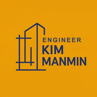

구조 · 토목 계산서 5종을 한곳에서 열고, 계산서마다 적용한 근거 법령과 설계기준을 확인합니다.
허가 신청일 시점의 법령 연혁에 따라 구조 안전 · 내진설계 확인 대상과 내진등급을 판별합니다.
고정 · 활 · 적설 · 풍 · 지진하중과 강도설계법 하중조합을 산정합니다.
합리식 우수량과 계획 오수량으로 관경을 정하고 Manning 공식으로 유속을 검토합니다.
콘크리트 옹벽의 전도 · 활동 · 지지력과 앵커 보강을 검토합니다.
표준관입시험 N값을 보정 · 환산해 얕은기초의 허용지지력(지내력)을 추정하고, 입증자료가 없을 때의 추정 지지력 상한과 대조합니다.
| 법령 · 기준 | 구분 | 현행 | 관련 조문 · 코드 | 적용 도구 |
|---|---|---|---|---|
| 건축법 | 법률 | 2026-11-12 시행(법률 제21880호 · 2026-11-25 대조) | 제48조(구조내력 등) · 제48조의2(건축물 내진등급의 설정) | 45 · 46 |
| 건축법 시행령 | 대통령령 | 2026-11-12 시행(대통령령 제36817호 · 2026-11-25 대조 · 제32조 변동 없음) | 제32조(구조 안전의 확인) | 45 |
| 건축물의 구조기준 등에 관한 규칙 | 국토교통부령 | 2024-12-17 시행 | 제56조(적용범위) · 제58조(구조안전확인서 제출) · 별표 11(중요도 및 중요도계수) · 제60조(건축물의 내진등급기준) · 별표 12(건축물의 내진등급기준) | 45 · 46 |
| 시설물의 안전 및 유지관리에 관한 특별법 시행령 | 대통령령 | 2026-09-15 시행 | 제4조(시설물의 종류) · 별표 1(제1종시설물 및 제2종시설물의 종류) 제8호 옹벽 및 절토사면 | 51 |
| KDS 41 건축구조기준 | 국가건설기준(KCSC) | 국가건설기준센터 현행본 | 41 12 00 건축물 설계하중 · 41 17 00 건축물 내진설계기준 · 41 19 00 건축물 기초구조 설계기준 | 45 · 46 · 52 |
| KDS 17 · 61 · 11 설계기준 | 국가건설기준(KCSC) | 국가건설기준센터 현행본 | 17 10 00 내진설계 일반 · 61 10 00 하수도설계 일반사항 · 61 40 00 관로시설 설계기준 · 11 80 05 콘크리트옹벽 · 11 60 00 앵커 설계기준 · 11 70 05 쌓기·깎기 · 11 50 05 얕은기초 설계기준(일반설계법) · 11 30 05 연약지반 설계 일반 | 46 · 50 · 51 · 52 |
안내 — 이 포털은 계산서별 근거와 시행일만 안내합니다. 수치 기준(하중 · 계수 · 관경 · 안전율 등)은 각 계산서의 산출근거표에서 확인하십시오. 최종 구조 설계값은 구조기술사 · 토목 설계자의 검토를 받으십시오. KDS 코드 원문과 개정 이력은 국가건설기준센터에서 확인하십시오.
설치되는 범위는 이 포털입니다. 카드에서 연 계산서는 앱 안의 브라우저 창으로 열리며, 계산서도 앱으로 쓰려면 각 계산서 화면에서 같은 방법으로 설치합니다.